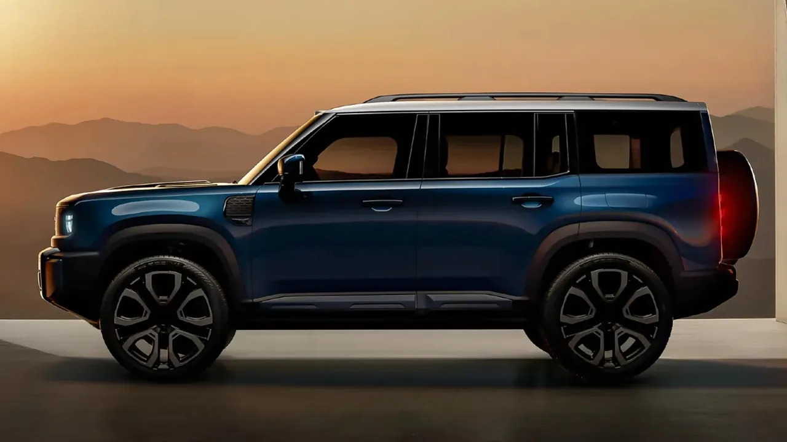
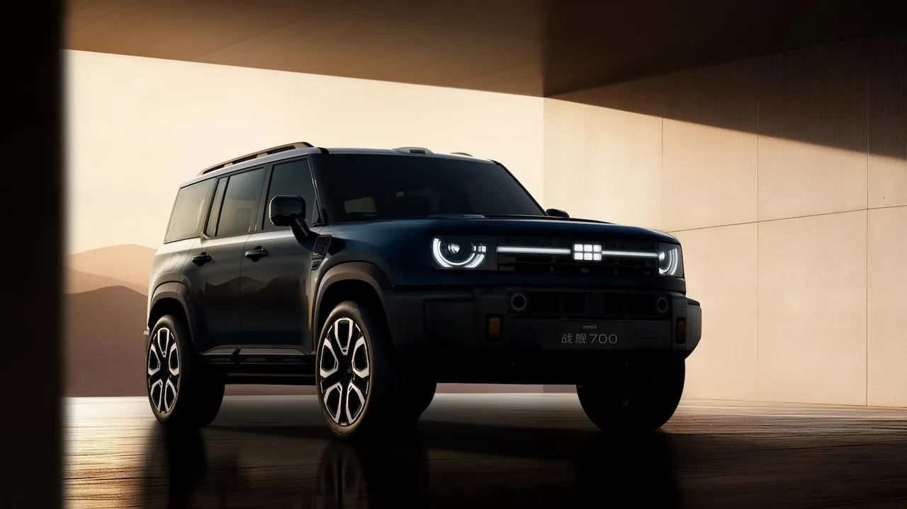

Geely's Zhanjian 700 goes on sale: an electrified off-road SUV with an AI all-terrain brain
Geely Auto Group launched its first electrified off-road SUV in China on Sunday — the Zhanjian 700, the first production vehicle on its dedicated GTA architecture, with an AI all-terrain driving system that reads the ground and picks its own settings. Pre-sales are open now; deliveries start before year-end.
- Geely Auto Group launched the Zhanjian 700 in China on Sunday (announced via GlobeNewswire on October 11, 2026 out of Hangzhou); pre-sales have begun, deliveries expected by the end of the year, with markets outside China to follow (no dates or regions named).
- It is the first production vehicle on Geely's dedicated GTA architecture for electrified off-road vehicles: an integrated frame combining body-on-frame durability with unibody-style packaging — lighter, lower center of gravity, more interior space.
- Powertrain: Geely's EM-T Hybrid with up to 1,129 PS peak power, 13,920 N·m of wheel torque, and 1,700 km combined range, working with intelligent four-wheel drive and chassis systems.
- The AI all-terrain system identifies road/terrain conditions and selects vehicle settings; the showpiece is one-touch intelligent climbing mode, engaging four-wheel drive and coordinating power delivery on steep or broken ground.
- Structural safety: an occupant safety cage built entirely from ultra-high-strength and hot-formed steel, including a concealed rollover protection structure 10.6 metres long, with a claimed roof-crush strength of 161 kN.
- Extreme-case features: emergency flotation and a swimming mode for flooding, plus vehicle-mounted sensors detecting hard-to-see obstacles underwater — engineering for failure modes competitors mostly ignore.
Geely Auto Group launched the Zhanjian 700 in China on Sunday, its first electrified off-road SUV and the first production vehicle on the company's dedicated GTA architecture. The headline feature is an AI all-terrain driving system that reads the ground beneath the wheels and selects the vehicle's settings for it — part of a growing push by Chinese automakers to define the “AI-defined vehicle.”
What launched, and when
The announcement went out via GlobeNewswire on October 11, 2026, out of Hangzhou. Pre-sales in China have already begun, with deliveries expected by the end of the year. Geely says markets outside China will follow, though it named no dates or regions. For a company whose portfolio spans Geely, Lynk & Co, and Zeekr, this is the first time the badge has stretched into rugged off-road territory.
The hardware underneath
The Zhanjian 700 is the first production application of Geely's GTA architecture, built specifically for electrified off-road vehicles. Its integrated frame structure combines body-on-frame durability with unibody-style packaging — lighter, with a lower center of gravity and more interior space, according to the company.
Power comes from Geely's EM-T Hybrid powertrain: up to 1,129 PS of peak power, 13,920 N·m of wheel torque, and a combined range of 1,700 km. It works with intelligent four-wheel drive and chassis systems that manage traction and torque across changing surfaces.

The AI in the driver's seat
The all-terrain system identifies road and terrain conditions and rapidly selects the appropriate vehicle settings. The showpiece is a one-touch intelligent climbing mode: hit it and the SUV engages four-wheel drive, coordinates power delivery and vehicle control, and cuts the manual inputs the driver has to make on steep or broken ground. It is off-road driving as a settings problem — the vehicle's job is to sense the surface and pick the right configuration faster than a human juggling diff locks and throttle maps.
Geely framed the whole model as an “AI-powered all-terrain SUV,” integrating architecture, powertrain, and chassis control as a single system rather than bolting assistance features onto a conventional truck.

Built like it might end up underwater
Geely devoted a large part of the announcement to structural safety. The GTA architecture's integrated frame works with an occupant safety cage built entirely from ultra-high-strength and hot-formed steel, including a concealed rollover protection structure stretching 10.6 metres through the body — with a claimed roof-crush strength of 161 kN.
The extreme-case features are striking: emergency flotation and a swimming mode for flooding, plus vehicle-mounted sensors that can detect hard-to-see obstacles underwater. Whether drivers will ever need a car that swims matters less than what it signals — Geely is engineering the SUV for failure modes its competitors mostly ignore.
The physical-AI race in Chinese autos
The launch lands in the middle of an aggressive week for AI-defined vehicles. XPeng, which bills itself as a “Physical AI” company, is about to make the global launch of its G9L AI flagship SUV at the Paris Motor Show, which opens October 12, alongside its IRON humanoid robot and flying-car projects. Geely's answer is narrower but more immediate: not autonomy on city streets, but intelligence in the dirt — a machine that reads terrain and acts on it.
Why this matters
Most AI-in-cars news is about autonomy: driver assistance, robotaxis, the long march toward full self-driving. The Zhanjian 700 represents the other branch of the tree — AI as a vehicle-control layer for conditions where roads don't exist. It's also a reminder that China's auto giants are now launching AI-branded hardware categories the way phone makers launch camera systems. The question for buyers, and for rivals, is whether the intelligence is real: a one-touch climbing mode is only as good as the terrain sensing behind it. Deliveries begin this winter — the dirt will be the judge.
Frequently asked questions
What is the Geely Zhanjian 700?
Geely Auto Group's first electrified off-road SUV and the first production vehicle on its dedicated GTA architecture, launched in China on Sunday. The headline feature is an AI all-terrain driving system that reads the ground beneath the wheels and selects the vehicle's settings for it — what Geely calls an 'AI-powered all-terrain SUV.'
What are the powertrain specs?
Geely's EM-T Hybrid powertrain: up to 1,129 PS of peak power, 13,920 N·m of wheel torque, and a combined range of 1,700 km — working with intelligent four-wheel drive and chassis systems that manage traction and torque across changing surfaces.
What is the one-touch intelligent climbing mode?
Hit it and the SUV engages four-wheel drive, coordinates power delivery and vehicle control, and cuts the manual inputs the driver has to make on steep or broken ground — off-road driving reframed as a settings problem, where the vehicle senses the surface and picks the right configuration faster than a human juggling diff locks and throttle maps.
Can it really swim?
Geely says the Zhanjian 700 has emergency flotation and a swimming mode for flooding, plus vehicle-mounted sensors that detect hard-to-see obstacles underwater — backed by an occupant safety cage of ultra-high-strength and hot-formed steel with a claimed roof-crush strength of 161 kN. Pre-sales are open in China with deliveries before year-end; markets outside China will follow, unnamed.